from os.path import join as pjoin
import pandas as pd
import numpy as np
import seaborn as sns
import matplotlib.pyplot as pltIntroduction to MICrONS Data Access (Part 1)

Electron Microscopy (EM) enables morphological reconstruction of neurons and detection of their synaptic connectivity . The MICrONS dataset is one of the largest datasets volume EM datasets currently available, and spans all layers of visual cortex. We will be using this dataset to query the connectivity between neurons in the visual cortex.
Note on data access: To make our lifes easier, we already queried the most of the data needed for this exercise from the database. We have made it available as versioned files that can be read with pandas. The entire dataset is hosted using the Connectome Annotation Versioning Engine (CAVE) . A separate preprocessing notebook shows how to use CAVE to generate the files used in this notebook.
materialization_version = 1718 # Current public as of March 2026
data_url = "https://github.com/AllenInstitute/connectomics_at_cosyne/raw/refs/heads/main/docs/resources/data"Visualize axon-proofread cells in the dataset
About the cell info table. The CAVE view that incorporates this information into a single view is: aibs_cell_info.
# Load the curated cell types table
cell_types_df = pd.read_csv(pjoin(data_url, f'v{materialization_version}_cell_info.csv'))# @title Figure 1: Spatial position of neurons in MICrONS
fig, ax = plt.subplots(2,1, figsize=(8, 6),dpi=150, sharex=True)
# Added a labeled column for ease of plotting
cell_types_df['Status'] = 'None'
cell_types_df.loc[cell_types_df.status_axon, 'Status'] = 'Proofread'
cell_types_df.loc[cell_types_df.is_column, 'Status'] = 'Proofread-column'
cell_types_df = cell_types_df.sort_values('Status')
# Plot xz-view (top down)
sns.scatterplot(cell_types_df,
x='pt_position_x_tform',
y='pt_position_z_tform',
hue='Status',
hue_order = ['None', 'Proofread', 'Proofread-column'],
palette={'Proofread-column': 'indigo', 'Proofread': 'darkorchid', 'None': 'lightgrey'},
s=3,
alpha=0.5,
ax=ax[0]
)
# Plot xy-view (coronal)
sns.scatterplot(cell_types_df,
x='pt_position_x_tform',
y='pt_position_y_tform',
hue='Status',
hue_order = ['None', 'Proofread', 'Proofread-column'],
palette={'Proofread-column': 'indigo', 'Proofread': 'darkorchid', 'None': 'lightgrey'},
s=3,
alpha=0.5,
ax=ax[1]
)
sns.despine()
ax[1].invert_yaxis()
ax[0].set(xlabel='Medial--Lateral (um)', ylabel='Posterior--Anterior (um)')
ax[1].set(xlabel='Medial--Lateral (um)', ylabel='Depth (um)')
ax[0].set_aspect("equal")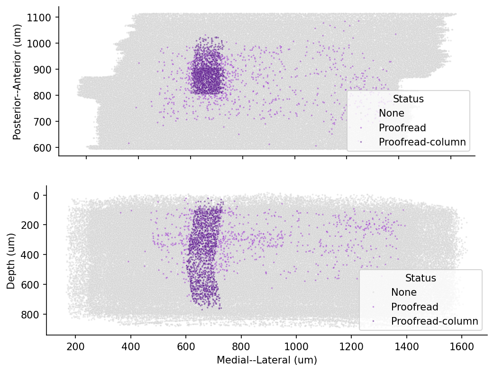
Transformed coordinate system
A note on the coordinate system: the MICrONS raw data has a roughly 5 degree slope from the left to the right. Second, if you look at the location of the pia surface, it’s at around y = 0.4 * 10^6.
Not only are these units large, the offset is arbitrary and it would make much more sense to anchor y=0 to the pial surface.
For the soma location in the cell type data above, we have applied the standard_transform. For documentation, see Standard Transform. In general, there are three types of coordinates you may encounter and it is worth being deliberate in which system you use.
- Voxel coordinates are the coordinates of a point in the original image volume. These are the coordinates that are used to index into the volumes you can see in Neuroglancer, but each number has a potentially different unit. In the MICrONs data, a voxel is 4 nm wide in the x and y directions, and 40 nm long in the z direction. This means that a 1x1x1 micron cube would be represented by a 250x250x25 voxel span. Annotations (such as synapses) are stored in voxel coordinates.
- Nanometer coordinates are the coordinates of a point in the original image volume, but in nanometers. This is equivalent to the voxel coordinate multiplied by the voxel resolution, with no further transformation applied. Mesh and skeleton vertices are stored in nanometer coordinates.
- Transformed coordinates reflect a trasnsformation that has been applied to the original image volume. This transformation is a rotation to make the pia surface as flat as possible, a translation to move the pial surface to y=0, and a scaling to bring coordinates into microns. Transformed coordinates are convenient for more accurate computations of depth and the pia-to-white-matter axis, but are not stored by default.
Synapse information
There are 337 million synapses in the MICrONS dataset.
We have collected all of the input and output synapses for the proofread cells in version 1718 (March 2026). If you are interested in working with this dataset in the future, we added a preprocessing notebook that shows how the data was queried.
Note that synapse queries always return the list of every synapse between the neurons in the query, even if there are multiple synapses between the same pair of neurons. A common pattern to generate a list of connections between unique pairs of neurons is to group by the root ids of the presynaptic and postsynaptic neurons and then count the number of synapses between them.
Here we will load all Proofread-to-Proofread connections within the V1 column, a small subset of the dataset.
column_synapses = pd.read_feather(pjoin(data_url, f'v{materialization_version}_v1_column_synapses.feather'))
column_synapses.shape(146711, 6)Connectivity matrix
The synapses of neurons create a network of connections. One way of visualizing this connectivity is in a matrix. Pandas provides the pivot_table function that we can use to make a matrix out of the tabular synapse data. For now, we will limit ourselves to the synapses between the proofread-column neurons.
Note: Each synapses has a size value assigned to it. How to aggregate the sizes from multiple synapes between two neurons depends on the research question. For now we ignore both synapse size and synapse count, and treat connection strength as binary: connected or not-connected
# matrix of synapse counts
syn_mat_binary = column_synapses.pivot_table(index="pre_pt_root_id", columns="post_pt_root_id",
values="size", aggfunc=lambda x: (np.sum(x) > 0)).fillna(0)
# Make sure matrix is quadratic
syn_mat_binary = syn_mat_binary.reindex(columns=np.array(syn_mat_binary.index)).astype(float)
row_indices, column_indices = np.nonzero(syn_mat_binary)# @title Figure 2: Binary connectivity matrix (column-to-column)
fig, ax = plt.subplots(figsize=(8, 4), dpi=150)
sns.heatmap(syn_mat_binary, cmap="gray_r", xticklabels=[], yticklabels=[],
ax=ax, square=True,
cbar_kws={"label": "Binary Connectivity", "ticks": [0, 1]})
n_edges = len(row_indices)
n_possible_edges = syn_mat_binary.shape[0] * syn_mat_binary.shape[1]
print(f"Number of edges: {n_edges}")
print(f"Number of possible edges: {n_possible_edges}")
print(f"Fraction of possible edges: {n_edges / n_possible_edges:.4f}")Number of edges: 78928
Number of possible edges: 1836025
Fraction of possible edges: 0.0430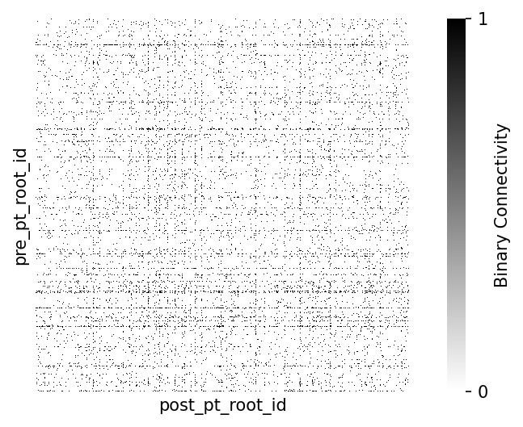
Consider: different measures of synaptic strength
When creating a connectivity matrix, how you measure synaptic strength can make a difference in your analysis. For 3 common ways of reporting connection strength:
- Binary connectivity: whether two cells are connected at all, as shown above.
-
Synaptic count: the total number of synapses that are part of the connection. This is typical of the Fly connectome where
countcaptures much of the connection diversity. The modalcountin mouse cortex is much lower. -
Synaptic size: the size of the postsynaptic density at every connection, generally aggregated as
sumormeanfor each unique connection.
How to take synapse size and number into account depends on the specific analysis.
Note: The size reported in the MICrONS dataset measures the synaptic cleft as segmented by the automated classifier in voxels (3d pixels, a measure of volume). These are correlated to anatomical measures such as synaptic area and spine head volumes (for excitatory synapses).
Let’s consider synapse count first and seperately, using the same pivot table but with aggfunc=lambda x: np.sum(x > 0):
Synapse count
# @title Figure 3: Synapse count per connection
# Count Histogram on linear-x
syn_mat = column_synapses.pivot_table(index="pre_pt_root_id", columns="post_pt_root_id",
values="size", aggfunc=lambda x: np.sum(x > 0)).fillna(0)
# Make sure matrix is quadratic
syn_mat = syn_mat.reindex(columns=np.array(syn_mat.index)).astype(float)
fig, ax = plt.subplots(figsize=(8, 4), dpi=150)
edge_weights = syn_mat.to_numpy()[row_indices, column_indices]
sns.histplot(
edge_weights,
discrete=True,
ax=ax,
)
ax.spines[["top", "right"]].set_visible(False)
ax.set(xlabel="Number of synapses per connection", ylabel="Number of connections")[Text(0.5, 0, 'Number of synapses per connection'),
Text(0, 0.5, 'Number of connections')]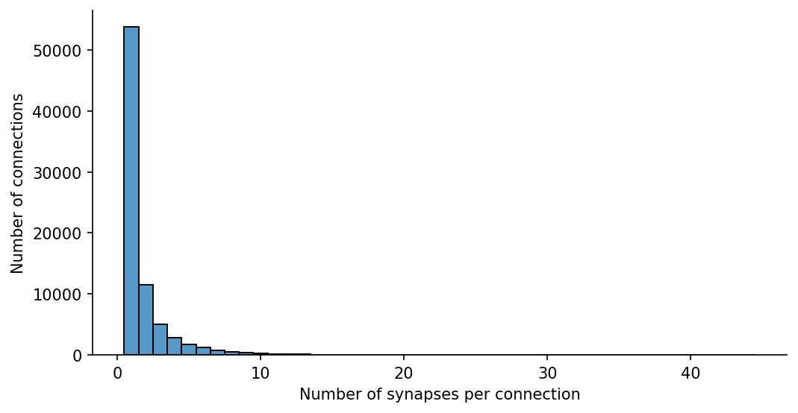
In other systems than mouse cortex, the number of synapses might be the more important measure (see Dorkenwald et al., 2022 for deeper dive into synapse size and counts).
However, in mouse cortex the modal number of Excitatory-to-excitatory connections is 1, while inhibitory-excitatory connections may be more varied
# extract only the synapses between excitatory-excitatory cells in the column
excitatory_root_ids = cell_types_df.query("broad_type=='excitatory'").pt_root_id.to_numpy()
# Filter synapse table for excitatory-excitatory connections
exc_exc_synapses = column_synapses.loc[(column_synapses.pre_pt_root_id.isin(excitatory_root_ids) &
column_synapses.post_pt_root_id.isin(excitatory_root_ids)
)]
np.shape(exc_exc_synapses)(36233, 6)# Filter synapse table for inhibitory-excitatory connections
inhibitory_root_ids = cell_types_df.query("broad_type=='inhibitory'").pt_root_id.to_numpy()
inh_exc_synapses = column_synapses.loc[(column_synapses.pre_pt_root_id.isin(inhibitory_root_ids) &
column_synapses.post_pt_root_id.isin(excitatory_root_ids)
)]
np.shape(inh_exc_synapses)(72765, 6)# Filter synapse table for inhibitory-inhibitory connections
inhibitory_root_ids = cell_types_df.query("broad_type=='inhibitory'").pt_root_id.to_numpy()
inh_inh_synapses = column_synapses.loc[(column_synapses.pre_pt_root_id.isin(inhibitory_root_ids) &
column_synapses.post_pt_root_id.isin(inhibitory_root_ids)
)]
np.shape(inh_exc_synapses)(72765, 6)# @title Figure 4: Synapse count per connection differs for excitatory or inhibitory connections
fig, ax = plt.subplots(1,3, figsize=(15, 4),dpi=150, sharex=True)
syn_mat = exc_exc_synapses.pivot_table(index="pre_pt_root_id", columns="post_pt_root_id",
values="size", aggfunc=lambda x: np.sum(x > 0)).fillna(0)
# Make sure matrix is quadratic
syn_mat = syn_mat.reindex(columns=np.array(syn_mat.index)).astype(float)
row_indices, column_indices = np.nonzero(syn_mat)
edge_weights = syn_mat.to_numpy()[row_indices, column_indices]
sns.histplot(
edge_weights,
discrete=True,
ax=ax[0],
facecolor='seagreen',
)
syn_mat = inh_exc_synapses.pivot_table(index="pre_pt_root_id", columns="post_pt_root_id",
values="size", aggfunc=lambda x: np.sum(x > 0)).fillna(0)
## This matrix cannot be quadratic
# syn_mat = syn_mat.reindex(columns=np.array(syn_mat.index)).astype(float)
row_indices, column_indices = np.nonzero(syn_mat)
edge_weights = syn_mat.to_numpy()[row_indices, column_indices]
sns.histplot(
edge_weights,
discrete=True,
ax=ax[1],
facecolor='deepskyblue',
)
# Added code for Inhibitory-Inhibitory plot (Can be delegated as student task)
syn_mat = inh_inh_synapses.pivot_table(index="pre_pt_root_id", columns="post_pt_root_id",
values="size", aggfunc=lambda x: np.sum(x > 0)).fillna(0)
# Make sure matrix is quadratic
syn_mat = syn_mat.reindex(columns=np.array(syn_mat.index)).astype(float)
row_indices, column_indices = np.nonzero(syn_mat)
edge_weights = syn_mat.to_numpy()[row_indices, column_indices]
sns.histplot(
edge_weights,
discrete=True,
ax=ax[2],
facecolor='firebrick',
)
sns.despine()
ax[0].set(title='Excitatory-Excitatory', xlabel="Number of synapses per connection", ylabel="Number of connections")
ax[1].set(title='Inhibitory-Excitatory', ylabel=None)
ax[2].set(title='Inhibitory-Inhibitory', ylabel=None)
plt.tight_layout()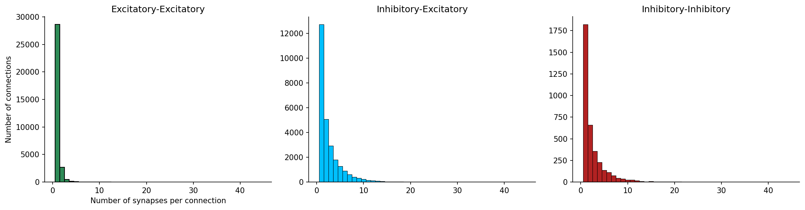
Synapse Size
In mouse visual cortex, the diversity in Excitatory to excitatory connectivity is much more often in synaptic size:
# @title Figure 5: Synapse size excitatory-to-excitatory connections
fig, axs = plt.subplots(1, 2, figsize=(10, 4), dpi=150)
syn_mat = exc_exc_synapses.pivot_table(index="pre_pt_root_id", columns="post_pt_root_id",
values="size", aggfunc=lambda x: (np.sum(x))).fillna(0)
# Make sure matrix is quadratic
syn_mat = syn_mat.reindex(columns=np.array(syn_mat.index)).astype(float)
# collect the synaptic weights that are non-zero
row_indices, column_indices = np.nonzero(syn_mat)
edge_weights = syn_mat.to_numpy()[row_indices, column_indices]
# Histogram on linear-x
ax = axs[0]
sns.histplot(
edge_weights,
kde=True,
bins=100,
ax=ax,
log_scale=False,
facecolor='seagreen',
)
ax.spines[["top", "right"]].set_visible(False)
ax.set(xlabel="Sum synapse size (voxels)", ylabel="Number of connections")
# Histogram on log-x
ax = axs[1]
sns.histplot(
edge_weights,
kde=True,
bins=100,
ax=ax,
log_scale=True,
facecolor='seagreen',
)
ax.spines[["top", "right"]].set_visible(False)
ax.set(xlabel="Sum synapse size (voxels - log scale)", ylabel="Number of connections")[Text(0.5, 0, 'Sum synapse size (voxels - log scale)'),
Text(0, 0.5, 'Number of connections')]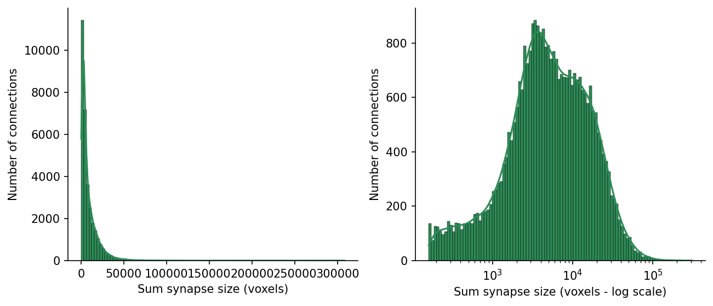
Let’s replot the square matrix with the log of the sum of synapses sizes between each connected pair aggfunc=lambda x: np.log(np.sum(x))
# matrix of log-summed synapse size
syn_mat_logsum = column_synapses.pivot_table(index="pre_pt_root_id", columns="post_pt_root_id",
values="size", aggfunc=lambda x: np.log(np.sum(x))).fillna(0)
# Make sure matrix is quadratic
syn_mat_logsum = syn_mat_logsum.reindex(columns=np.array(syn_mat.index)).astype(float)# @title Figure 7: Connectivity matrix, with synaptic strength (column-to-column)
fig, ax = plt.subplots(figsize=(8, 4), dpi=150)
sns.heatmap(syn_mat_logsum, cmap="gray_r", xticklabels=[], yticklabels=[],
ax=ax, square=True,
cbar_kws={"label": "Log summed synapse size (AU)"})
row_indices, column_indices = np.nonzero(syn_mat_logsum)
n_edges = len(row_indices)
n_possible_edges = syn_mat_logsum.shape[0] * syn_mat_logsum.shape[1]
print(f"Number of edges: {n_edges}")
print(f"Number of possible edges: {n_possible_edges}")
print(f"Fraction of possible edges: {n_edges / n_possible_edges:.4f}")Number of edges: 78928
Number of possible edges: 1836025
Fraction of possible edges: 0.0430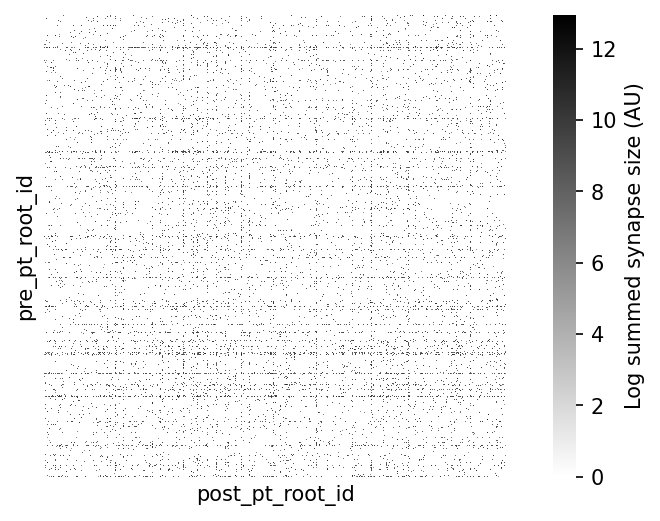
Student Task 1: Create the above Figure 5 for inhibitory to inhibitory synapses (color firebrick) . Label this figure as Figure 6
Figure 6: Synapse size inhibitory-to-inhibitory connections
fig, axs = plt.subplots(1, 2, figsize=(10, 4), dpi=150)
syn_mat = inh_inh_synapses.pivot_table(index="pre_pt_root_id", columns="post_pt_root_id",
values="size", aggfunc=lambda x: (np.sum(x))).fillna(0)
# Make sure matrix is quadratic
syn_mat = syn_mat.reindex(columns=np.array(syn_mat.index)).astype(float)
# collect the synaptic weights that are non-zero
row_indices, column_indices = np.nonzero(syn_mat)
edge_weights = syn_mat.to_numpy()[row_indices, column_indices]
# Histogram on linear-x
ax = axs[0]
sns.histplot(
edge_weights,
kde=True,
bins=100,
ax=ax,
log_scale=False,
facecolor='firebrick',
)
ax.spines[["top", "right"]].set_visible(False)
ax.set(xlabel="Sum synapse size (voxels)", ylabel="Number of connections")
# Histogram on log-x
ax = axs[1]
sns.histplot(
edge_weights,
kde=True,
bins=100,
ax=ax,
log_scale=True,
facecolor='firebrick',
)
ax.spines[["top", "right"]].set_visible(False)
ax.set(xlabel="Sum synapse size (voxels - log scale)", ylabel="Number of connections")
plt.tight_layout()
plt.show()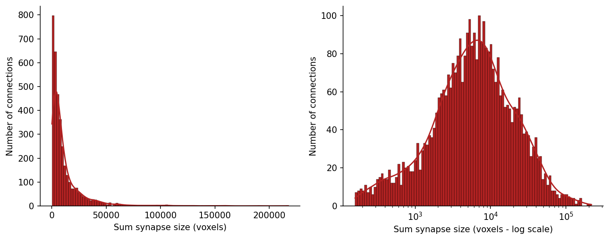
Synapse Size Distribution by Cell Type
Bethanny, is this a reasonable to mildly informative task? What kind of questions would be interesting to play around with here?
Synapse Size Distribution by Cell Type (Density Heatmap)
This plot visualizes the distribution of synapse sizes across different cell types and roles (pre- or post-synaptic) using a 2D histogram. The color intensity represents the density of synapses at a given size and cell type. The x-axis is on a logarithmic scale to better represent the skewed distribution of synapse sizes. Only synapses with a size greater than 1000 voxels are included.
synapse_df_with_cell_types = column_synapses.merge(cell_types_df[['pt_root_id', 'cell_type']],
left_on='pre_pt_root_id',
right_on='pt_root_id',
how='left')
synapse_df_with_cell_types = synapse_df_with_cell_types.rename(columns={'cell_type': 'pre_cell_type'})
synapse_df_with_cell_types = synapse_df_with_cell_types.merge(cell_types_df[['pt_root_id', 'cell_type']],
left_on='post_pt_root_id',
right_on='pt_root_id',
how='left',
suffixes=('_pre', '_post'))
synapse_df_with_cell_types = synapse_df_with_cell_types.rename(columns={'cell_type': 'post_cell_type'})
# Drop the redundant 'pt_root_id' columns from the merge operation
synapse_df_with_cell_types = synapse_df_with_cell_types.drop(columns=['pt_root_id_pre', 'pt_root_id_post'])
print("Head of the merged dataframe:")
print(synapse_df_with_cell_types.head())
print("\nInfo of the merged dataframe:")
synapse_df_with_cell_types.info()Head of the merged dataframe:
syn_id size pre_pt_root_id post_pt_root_id \
0 152094175 14020.0 864691136138779517 864691135561699041
1 162611261 1080.0 864691136968109774 864691135351096279
2 169627147 1932.0 864691135375767369 864691135196475434
3 165734548 6576.0 864691135132887456 864691135954940424
4 144648847 5720.0 864691136389688695 864691135492665959
ctr_pt_position tag pre_cell_type post_cell_type
0 [172002, 194074, 19793] shaft 23P MC
1 [176572, 191036, 19891] spine MC 4P
2 [182868, 213324, 21608] shaft 5P-IT MC
3 [180705, 107472, 20831] shaft NGC BPC
4 [167926, 114776, 22585] spine 23P MC
Info of the merged dataframe:
<class 'pandas.core.frame.DataFrame'>
RangeIndex: 146711 entries, 0 to 146710
Data columns (total 8 columns):
# Column Non-Null Count Dtype
--- ------ -------------- -----
0 syn_id 146711 non-null Int64
1 size 146711 non-null Float32
2 pre_pt_root_id 146711 non-null Int64
3 post_pt_root_id 146711 non-null Int64
4 ctr_pt_position 146711 non-null object
5 tag 146711 non-null object
6 pre_cell_type 146711 non-null object
7 post_cell_type 146711 non-null object
dtypes: Float32(1), Int64(3), object(4)
memory usage: 9.0+ MBimport matplotlib.pyplot as plt
import seaborn as sns
import pandas as pd
import numpy as np
# Melt the DataFrame for easier plotting of pre and post cell types
melted_synapse_df = synapse_df_with_cell_types.melt(id_vars=['syn_id', 'size'],
value_vars=['pre_cell_type', 'post_cell_type'],
var_name='cell_role',
value_name='cell_type')
# Filter out 'unknown' cell types and NaNs for cleaner visualization
melted_synapse_df = melted_synapse_df.loc[(melted_synapse_df['cell_type'] != 'unknown') &
(melted_synapse_df['cell_type'].notna())]
# Filter data to only show synapses with a size greater than 1000 voxels
melted_synapse_df = melted_synapse_df[melted_synapse_df['size'] > 1000]
# Create the density heatmap using histplot
plt.figure(figsize=(14, 8), dpi=150)
sns.histplot(data=melted_synapse_df, x='size', y='cell_type', hue='cell_role',
multiple='stack', palette='viridis', log_scale=(True, False), cbar=True,
cbar_kws={'label': 'Density'})
plt.title('Synapse Size Distribution by Cell Type (Density Heatmap)')
plt.xlabel('Synapse Size (voxels, log scale)')
plt.ylabel('Cell Type')
plt.grid(axis='x', linestyle='--', alpha=0.7)
sns.despine()
plt.tight_layout()
plt.show()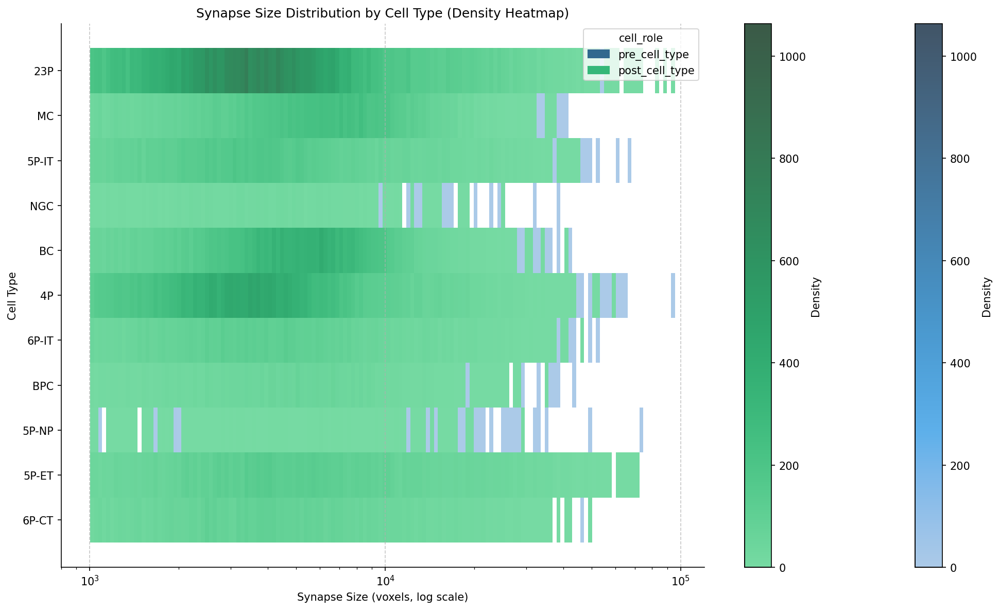
Average Synapse Size by Cell Type and Role
This section calculates and displays the average synapse size for each cell type, distinguishing between their roles as pre-synaptic or post-synaptic neurons. The results are grouped to show the mean synapse size for each unique cell type and role combination.
average_synapse_size = melted_synapse_df.groupby(['cell_type', 'cell_role'])['size'].mean().reset_index()
print("Average synapse size per cell type and role:")
display(average_synapse_size)Average synapse size per cell type and role:| cell_type | cell_role | size | |
|---|---|---|---|
| 0 | 23P | post_cell_type | 5602.828613 |
| 1 | 23P | pre_cell_type | 7751.477051 |
| 2 | 4P | post_cell_type | 4728.259766 |
| 3 | 4P | pre_cell_type | 7406.111328 |
| 4 | 5P-ET | post_cell_type | 7937.69043 |
| 5 | 5P-ET | pre_cell_type | 7435.849609 |
| 6 | 5P-IT | post_cell_type | 5532.230957 |
| 7 | 5P-IT | pre_cell_type | 7358.165039 |
| 8 | 5P-NP | post_cell_type | 5467.21582 |
| 9 | 5P-NP | pre_cell_type | 7639.936523 |
| 10 | 6P-CT | post_cell_type | 5960.418457 |
| 11 | 6P-CT | pre_cell_type | 6355.678223 |
| 12 | 6P-IT | post_cell_type | 5485.649414 |
| 13 | 6P-IT | pre_cell_type | 6842.422852 |
| 14 | BC | post_cell_type | 5525.273438 |
| 15 | BC | pre_cell_type | 4460.580078 |
| 16 | BPC | post_cell_type | 5353.669434 |
| 17 | BPC | pre_cell_type | 5529.954102 |
| 18 | MC | post_cell_type | 6523.725098 |
| 19 | MC | pre_cell_type | 3758.485352 |
| 20 | NGC | post_cell_type | 4191.183105 |
| 21 | NGC | pre_cell_type | 3432.771484 |
Cell type tables
Identifying the putative ‘cell type’ from the EM morphology is a process that involves both manual and automatic classifications. Subsets of the dataset have been manually classified by anatomists at the Allen Institute, and these ground truth labels used to train and refine different automated ‘feature classifiers’ over time.
Using the automated cell types
Many of these automated cell type definitions were established and refined for the MICrONS Dataset including:
- Perisomatic cell features (Elabbady et al.)
- Morphology and connectivity features (Schneider-Mizell et al.)
- Dendrite and spine multifeature model. The process of applying these labels is ongoing.
Casey Schneider-Mizell’s most recent cell typing, the multifeature cell typing, is available in CAVE from the cell_type_multifeature_combo table which labels cell types according to using soma, nucleus, dendrite, and spine features. These are colated in the meso_type column of our cell types dataframe.
For this demonstation, we will use cell_types from the perisomatic cell features. Choose an alternate cell type classification at your discretion.
Note: Cells here without a label are NaN. These are either non-neuronal cells or potential neurons with large segmentation errors that did not pass quality check
cell_types_df.value_counts(['cell_type']).sort_index()| count | |
|---|---|
| cell_type | |
| 23P | 19650 |
| 4P | 14712 |
| 5P-ET | 2149 |
| 5P-IT | 7890 |
| 5P-NP | 932 |
| 6P-CT | 6770 |
| 6P-IT | 11651 |
| BC | 3354 |
| BPC | 1494 |
| MC | 2469 |
| NGC | 588 |
| OPC | 1422 |
| astrocyte | 6898 |
| microglia | 2358 |
| oligo | 6901 |
| pericyte | 374 |
| unknown | 32428 |
Sorting the synapse matrix with cell types
Let’s combine the synaptic connecitivity with the cell type information. Below we provide logic for sorting a connectivity matrix using a list of labels.
# @title Helper function: sort_matrix_by_types
def sort_matrix_by_types(mat: pd.DataFrame,
labels: pd.DataFrame,
label_type_col: str = "cell_type_auto",
label_id_col: str = "pt_root_id",
post_labels: pd.DataFrame = None,
post_label_type_col: str = None,
post_label_id_col: str = None):
"""Sorts (synapse) matrix by labels.
This function assumes a square synapse matrix!
Args:
mat: synapse matrix as pandas DataFrame
labels: DataFrame with labels, e.g. the output of client.materialize.query_table('aibs_metamodel_celltypes_v661')
label_type_col: column name in labels for cell types
label_id_col: column name in labels for root ids
post_labels: DataFrame with labels, e.g. the output of client.materialize.query_table('aibs_metamodel_celltypes_v661')
post_label_type_col: column name in labels for cell types
post_label_id_col: column name in labels for root ids
Returns:
mat_sorted: sorted matrix
mat_labels: sorted labels; has the same length as matrix
"""
if post_labels is None:
post_labels = labels
if post_label_type_col is None:
post_label_type_col = label_type_col
if post_label_id_col is None:
post_label_id_col = label_id_col
mat_sorted = mat.copy()
pre_mat_labels = np.array(labels.set_index(label_id_col).loc[mat_sorted.index][label_type_col])
pre_sorting = np.argsort(pre_mat_labels)
post_mat_labels = np.array(post_labels.set_index(post_label_id_col).loc[mat_sorted.T.index][post_label_type_col])
post_sorting = np.argsort(post_mat_labels)
mat_sorted = mat_sorted.iloc[pre_sorting].T.iloc[post_sorting].T
return mat_sorted, pre_mat_labels[pre_sorting], post_mat_labels[post_sorting]# Sort the column connectivity
syn_mat = column_synapses.pivot_table(index="pre_pt_root_id", columns="post_pt_root_id",
values="size", aggfunc=lambda x: np.log(np.sum(x))).fillna(0)
syn_mat = syn_mat.reindex(columns=np.array(syn_mat.index)).astype(float)
# sort the matrix by cell types to render sensibly in heatmap
cell_types_df = cell_types_df.fillna({'cell_type': 'unknown', 'broad_type': 'unknown', 'meso_type': 'unknown'})
syn_mat_ct, syn_mat_cell_types, _ = sort_matrix_by_types(syn_mat, cell_types_df, label_type_col="cell_type")# @title Figure 8: Connectivity matrix sorted by cell type
# add colormap for cell type
cts, ct_idx = np.unique(syn_mat_cell_types, return_inverse=True)
ct_colors = plt.get_cmap("tab20")(ct_idx)
fig, ax = plt.subplots(figsize=(7, 5), dpi=150)
sns.heatmap(syn_mat_ct, cmap="gray_r", xticklabels=[], yticklabels=[],
ax=ax, square=True,
cbar_kws={"label": "Log sum synapse size (AU)"})
# Adding row and column colors for cell types
for i, color in enumerate(ct_colors):
ax.add_patch(plt.Rectangle(xy=(-0.01, i), width=0.01, height=1, color=color, lw=0,
transform=ax.get_yaxis_transform(), clip_on=False))
for i, color in enumerate(ct_colors):
ax.add_patch(plt.Rectangle(xy=(i, 1), height=0.01, width=1, color=color, lw=0,
transform=ax.get_xaxis_transform(), clip_on=False))
import matplotlib
# add a legend for the cell types
legend_elements = [matplotlib.lines.Line2D([0], [0], color=plt.get_cmap("tab20")(i), label=ct) for i, ct in enumerate(cts)]
plt.legend(handles=legend_elements, loc='upper left', bbox_to_anchor=(1.3, 1), title="cell types")
plt.show()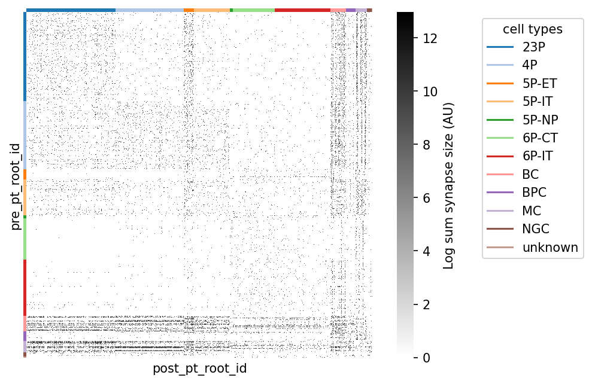
Beyond proofread-to-proofread connectivity
In the MICrONS dataset, the general rule is that dendrites onto cells with a cell body are sufficiently proofread to trust synaptic connections onto a cell. Axons on the other hand require so much proofreading that only ~2200 cells have proofread axons.
Proofreading status is available from CAVE table proofreading_status_and_strategy, and from the previously loaded cell types table.
cell_types_df.value_counts(['status_axon','strategy_axon'])| count | ||
|---|---|---|
| status_axon | strategy_axon | |
| False | none | 119826 |
| True | axon_partially_extended | 1576 |
| axon_fully_extended | 518 | |
| axon_interareal | 120 |
Axon and dendrite compartment status are marked separately, as proofreading effort was applied differently to the different compartments in some cells. In all cases, a status of TRUE indicates that false merges have been comprehensively removed, and the compartment is at least ‘clean’. Consult the ‘strategy’ column if completeness of the compartment is relevant to your research.
Some cells were extended to different degrees of completeness, or with different research goals in mind. This is denoted by ‘strategy_axon’, which may be one of:
none: No cleaning, and no extension, and status isFALSE.axon_partially_extended: The axon was extended outward from the soma, following each branch to its termination. Output synapses represent a sampling of potential partners.axon_interareal: The axon was extended with a preference for branches that projected to other brain areas. Some axon branches were fully extended, but local connections may be incomplete. Output synapses represent a sampling of potential partners.axon_fully_extended: Axon was extended outward from the soma, following each branch to its termination. After initial extension, every endpoint was identified, manually inspected, and extended again if possible. Output synapses represent a largely complete sampling of partners.
proofread_cells = cell_types_df.query('status_axon==True').pt_root_id.to_numpy()
print(f'Cells with proofread axons: {len(proofread_cells)}')Cells with proofread axons: 2214Previously we worked with the proofread cells among the V1 column, which totaled 146,711 unique synapses. However, the total number of outputs from all proofread cells (including thalamic axons without somas in the volume) to any cell the volume is much higher: 2,493,674
all_output_synapses = pd.read_feather(pjoin(data_url, f'v{materialization_version}_proofread_output_synapses.feather'))
print(f'All outputs from proofread neurons : {len(all_output_synapses)}')
neuron_ids = cell_types_df.query("(broad_type=='excitatory') | (broad_type=='inhibitory')").pt_root_id.to_numpy()
known_output_synapses = all_output_synapses.loc[all_output_synapses.post_pt_root_id.isin(neuron_ids)]
print(f'Synapses between known neurons (from proofread to any neuron): {len(known_output_synapses)}')
connection_counts = known_output_synapses.value_counts(['pre_pt_root_id','post_pt_root_id'])
print(f'Unique (binarized) connections between known neurons (from proofread to any neuron): {len(connection_counts)}')All outputs from proofread neurons : 2493674
Synapses between known neurons (from proofread to any neuron): 2088830
Unique (binarized) connections between known neurons (from proofread to any neuron): 1257392%%time
# Binarized connectivity for all synapses
rect_syn_mat = known_output_synapses.pivot_table(index="pre_pt_root_id", columns="post_pt_root_id",
values="size", aggfunc=lambda x: (np.sum(x)>0)).fillna(0)
np.shape(rect_syn_mat)CPU times: user 1min 15s, sys: 3.18 s, total: 1min 18s
Wall time: 1min 18s(2275, 63718)Bethanny, do we need this block? I think the point about volume can be made as a comment?
Rendering synapses from proofread cells in MICrONS Minnie65: between V1 Column cells (gold) and between any cells (grey)


Part II: Adding context to connectivity
Here we will move beyond a curated excerpt of data prepared at a specific version, and provide an example of general data access patterns to Connectome Annotation Versioning Engine datastack for MICrONs.
- CAVE access (microns, v1dd, flywire, fanc, banc, h01, etc.)
- Linearized skeleton representation of neurons
- Aysmmetric constraints on proofread inputs and outputs
- Post synaptic struture: onto spine, shaft, soma
- Topology of synapses along dendritic branches
CAVE account setup
In order to manage server traffic, every user needs to create a CAVE account and download a user token to access CAVE’s services programmatically. The CAVE infrastructure can be read about in more detail in the CAVE Paper.
The MICrONS data is publicly available which means that no extra permissions need to be given to a new user account to access the data. Bulk downloads of some static data are also available without an account on MICrONs Explorer.
A Google account (or Google-enabled account) is required to create a CAVE account.
Go to: https://global.daf-apis.com/auth/api/v1/user/token to view a list of your existing tokens
If you have never made a token before:
- go here: https://global.daf-apis.com/sticky_auth/api/v1/tos/2/accept to accept terms of service
- then go here https://global.daf-apis.com/auth/api/v1/create_token to create a new token.
%%capture
!uv pip install caveclient
!uv pip install cloud-volume
!uv pip install ossifyfrom caveclient import CAVEclient
my_token = "MY_TOKEN"
client = CAVEclient("minnie65_public", auth_token=my_token)Setup a persisent token for CAVE authentication
If you are running this on your local machine rather than colab, you may also store the token on your machine. This makes future access easier as you do not have to specify the token.
client.auth.save_token(token=my_token, overwrite=True)
And thereafter initialize CAVE with:
client = CAVEclient("minnie65_public")Skeleton representation
Often in thinking about neurons, you want to measure things along a linear dimension of a neuron.
However, the segmentation and meshes are a full complex 3d shape that makes this non-trivial. There are methods for reducing the shape of a segmented neuron down to a linear tree like structure usually referred to as a skeleton. CAVE Skeleton Service automatically generates skeletons for a large number of cells in the dataset, and make the skeleton generation available on demand.
The python package ossify provides skeleton downloading, processing, analysis, and many convenience functions. Including loading cells directly from connectomics databases using CAVEclient. For documentation, see Ossify
Let’s take one example proofread cell
import ossify
# Load basic cell (skeleton + L2 graph)
root_id = 864691135774053371 # known L23 cell at v1718
# root_id = proofread_cells[2] # consider iterating through proofread cells
cell = ossify.load_cell_from_client(
root_id=root_id,
client=client,
)
print(f"Loaded cell {cell.name}")
print(f"Skeleton: {cell.skeleton.n_vertices} vertices")
print(f"Graph: {cell.graph.n_vertices} L2 vertices")Loaded cell 864691135774053371
Skeleton: 4893 vertices
Graph: 11542 L2 vertices# @title Figure 8: Skeleton representation in 2D
# Plot different 2D projections
projections = ["xy", "zy"]
fig, axes = plt.subplots(1, 2, figsize=(10, 4), dpi=150)
for i, proj in enumerate(projections):
ossify.plot.plot_morphology_2d(
cell,
projection=proj,
color="compartment",
palette={1: 'navy', 2: 'tomato', 3: 'black'}, # color scheme for axon, dendrite
ax=axes[i]
)
axes[i].set_title(f"Projection: {proj}")
axes[i].set_ylabel(f"(nm)")
axes[i].set_xlabel(f"(nm)")
axes[i].set_aspect("equal")
axes[0].set(xlabel='X, medial-lateral (nm)', ylabel='Y, depth (nm)')
axes[1].set(xlabel='X, anterior-posterior (nm)', ylabel='Y, depth (nm)')
sns.despine()
plt.tight_layout()
plt.show()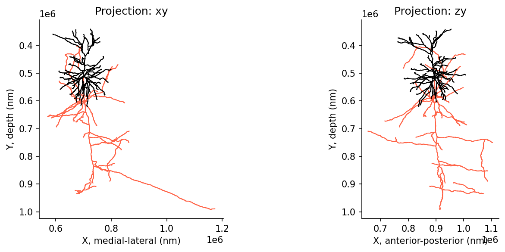
Morphological compartment names
The compartment types defined at each vertex adhere to standardized conventions for neuronal morphologies saved as swc files (for more information, see here: www.neuromorpho.org).
These conventions are as follows:- 0 - undefined
- 1 - soma (default color ‘olive’)
- 2 - axon (default color ‘steelblue’)
- 3 - (basal) dendrite (default color ‘firebrick’ red)
- 4 - apical dendrite
- 5+ - custom
In most of these neurons, distinctions were not made between basal or apical dendrites - therefore dendrites should almost exclusively map to compartment type “3”.
Adding synapse positions to skeleton
# Load skeleton with synaptic features
root_id = 864691135774053371 # known L23 cell at v1718
cell = ossify.load_cell_from_client(
root_id=root_id,
client=client,
synapses=True, # optional argument to load synapses with skeleton
include_partner_root_id=True, # optional argument to load partner root ids with synapses
)
print(f"Loaded cell {cell.name}")
print(f"Skeleton: {cell.skeleton.n_vertices} vertices")
print(f"Graph: {cell.graph.n_vertices} L2 vertices")
# All annotations in the cell
cell.annotations.describe()Loaded cell 864691135774053371
Skeleton: 4893 vertices
Graph: 11542 L2 vertices
# Annotations (2)
├── pre_syn (PointCloudLayer)
│ ├── 383 vertices
│ ├── features: [created, deleted, post_pt_position_x, post_pt_position_y, post_pt_position_z, post_pt_root_id,
│ post_pt_supervoxel_id, pre_pt_l2_id, pre_pt_position_x, pre_pt_position_y, pre_pt_position_z, pre_pt_root_id,
│ pre_pt_supervoxel_id, size]
│ └── Links: graph <-> pre_syn
└── post_syn (PointCloudLayer)
├── 4794 vertices
├── features: [created, deleted, post_pt_l2_id, post_pt_position_x, post_pt_position_y, post_pt_position_z,
│ post_pt_root_id, post_pt_supervoxel_id, pre_pt_position_x, pre_pt_position_y, pre_pt_position_z, pre_pt_root_id,
│ pre_pt_supervoxel_id, size]
└── Links: graph <-> post_syn# Synapse dataframe attached to skeleton
pre_syn_df = cell.annotations.pre_syn.nodes
post_syn_df = cell.annotations.post_syn.nodes
pre_syn_df.columnsIndex(['created', 'deleted', 'pre_pt_position_x', 'pre_pt_position_y',
'pre_pt_position_z', 'post_pt_position_x', 'post_pt_position_y',
'post_pt_position_z', 'ctr_pt_position_x', 'ctr_pt_position_y',
'ctr_pt_position_z', 'size', 'pre_pt_supervoxel_id', 'pre_pt_root_id',
'post_pt_supervoxel_id', 'post_pt_root_id', 'pre_pt_l2_id'],
dtype='object')# @title Figure 9: Skeleton with synaptic inputs and outputs
fig, ax = plt.subplots(1, 2, figsize=(10, 4), dpi=150)
for i in range(2):
ossify.plot.plot_morphology_2d(cell,
projection="xy",
color="compartment",
palette={1: 'navy', 2: 'tomato', 3: 'black'},
ax=ax[i])
# Output synapses
sns.scatterplot(data=pre_syn_df, x="ctr_pt_position_x", y="ctr_pt_position_y",
s=3, color="darkviolet", ax=ax[0], edgecolor=None, zorder=100)
ax[0].text(.65,.75,f'{len(pre_syn_df)} total', color='darkviolet', transform = ax[0].transAxes)
# Input synapses
sns.scatterplot(data=post_syn_df, x="ctr_pt_position_x", y="ctr_pt_position_y",
s=3, color="teal", ax=ax[1], edgecolor=None, zorder=100)
ax[1].text(.65,.75,f'{len(post_syn_df)} total', color='teal', transform = ax[1].transAxes)
ax[0].set(title="Output Synapses", xlabel='X, medial-lateral (nm)', ylabel='Y, depth (nm)')
ax[1].set(title="Input Synapses", xlabel='X, medial-lateral (nm)', ylabel='Y, depth (nm)')
sns.despine()
plt.show()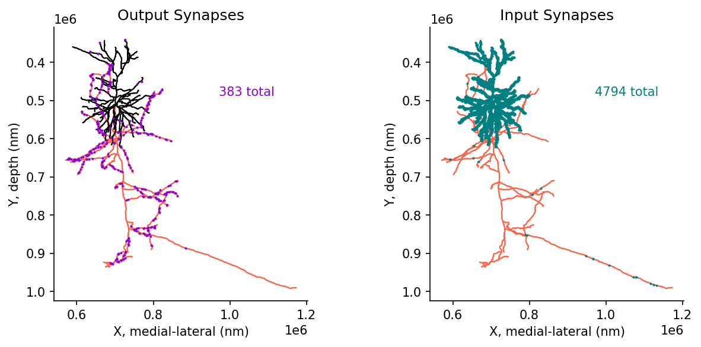
Proofreading considerations for inputs vs outputs
# Filter output synapses to known postsynaptic cells
pre_syn_to_known_df = pre_syn_df.loc[pre_syn_df.post_pt_root_id.isin(cell_types_df.pt_root_id)]
# Filter input synapses from known postsynaptic cells
post_syn_from_known_df = post_syn_df.loc[post_syn_df.pre_pt_root_id.isin(cell_types_df.pt_root_id)]# @title Figure 10: Skeleton with inputs and outputs, filtered by 'known' connections
fig, ax = plt.subplots(1, 2, figsize=(10, 4), dpi=150)
for i in range(2):
ossify.plot.plot_morphology_2d(cell,
projection="xy",
color="compartment",
palette={1: 'navy', 2: 'tomato', 3: 'black'},
ax=ax[i])
# Output synapses
sns.scatterplot(data=pre_syn_df, x="ctr_pt_position_x", y="ctr_pt_position_y",
s=3, color="lightgrey", ax=ax[0], edgecolor=None, zorder=100)
sns.scatterplot(data=pre_syn_to_known_df, x="ctr_pt_position_x", y="ctr_pt_position_y",
s=3, color="darkviolet", ax=ax[0], edgecolor=None, zorder=100)
ax[0].text(.6,.75,f'{len(pre_syn_df)} total', color='lightgrey', transform = ax[0].transAxes)
ax[0].text(.6,.7,f'{len(pre_syn_to_known_df)} to known', color='darkviolet', transform = ax[0].transAxes)
# Input synapses
sns.scatterplot(data=post_syn_df, x="ctr_pt_position_x", y="ctr_pt_position_y",
s=3, color="lightgrey", ax=ax[1], edgecolor=None, zorder=100)
sns.scatterplot(data=post_syn_from_known_df, x="ctr_pt_position_x", y="ctr_pt_position_y",
s=5, color="teal", ax=ax[1], edgecolor=None, zorder=100)
ax[1].text(.6,.75,f'{len(post_syn_df)} total', color='lightgrey', transform = ax[1].transAxes)
ax[1].text(.6,.7,f'{len(post_syn_from_known_df)} from known', color='teal', transform = ax[1].transAxes)
ax[0].set(title="Output Synapses", xlabel='X, medial-lateral (nm)', ylabel='Y, depth (nm)')
ax[1].set(title="Input Synapses", xlabel='X, medial-lateral (nm)', ylabel='Y, depth (nm)')
sns.despine()
plt.show()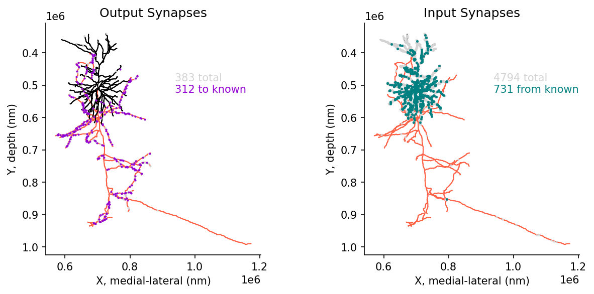
Synapse compartment classification
Up until now we have considered all synapses between any two cells, but different synapses target different compartments on the post synaptic cell.

Diagram and synapse compartment classification from: A quantitative census of millions of postsynaptic structures in a large electron microscopy volume of mouse visual cortex (Pedigo et al.).
Available as CAVE table: synapse_target_predictions_ssa_v2.
# Add spine information to outputs
output_synapse_tags = client.materialize.tables.synapse_target_predictions_ssa_v2(id=pre_syn_df.index).query(
select_columns={'synapses_pni_2': ['id'], # reference id for synapse table
'synapse_target_predictions_ssa_v2': ['tag'], # compartment label
}
).set_index('id')
pre_syn_df = (pre_syn_df.merge(output_synapse_tags, left_index=True, right_index=True, how='left')
.rename(columns={'tag': 'Target'})
.fillna({'Target': 'none'})
)
# Add spine information to inputs
input_synapse_tags = client.materialize.tables.synapse_target_predictions_ssa_v2(id=post_syn_df.index).query(
select_columns={'synapses_pni_2': ['id'], # reference id for synapse table
'synapse_target_predictions_ssa_v2': ['tag'], # compartment label
}
).set_index('id')
post_syn_df = (post_syn_df.merge(input_synapse_tags, left_index=True, right_index=True, how='left')
.rename(columns={'tag': 'Target'})
.fillna({'Target': 'none'})
)WARNING:caveclient.base:Table Owner Notice on synapse_target_predictions_ssa_v2: Table in development, contact Ben Pedigo with questions or feedback. Citation forthcoming, reach out if wanting to use for publication.
WARNING:caveclient.base:Table Owner Notice on synapse_target_predictions_ssa_v2: Table in development, contact Ben Pedigo with questions or feedback. Citation forthcoming, reach out if wanting to use for publication.# @title Figure 11: Synaptic target compartments: spine, shaft, soma
fig, ax = plt.subplots(1, 2, figsize=(10, 4), dpi=150)
for i in range(2):
ossify.plot.plot_morphology_2d(cell,
projection="xy",
color="compartment",
palette={1: 'navy', 2: 'dimgrey', 3: 'black'},
ax=ax[i])
# Output synapses
sns.scatterplot(data=pre_syn_df, x="ctr_pt_position_x", y="ctr_pt_position_y",
s=3, hue='Target', hue_order=['spine','shaft','soma','none'],
palette={'spine': 'deeppink','shaft': 'gold', 'soma':'cyan', 'none': 'lightgrey'},
ax=ax[0], edgecolor=None, zorder=100)
# Input synapses
sns.scatterplot(data=post_syn_df, x="ctr_pt_position_x", y="ctr_pt_position_y",
s=3, hue='Target', hue_order=['spine','shaft','soma','none'],
palette={'spine': 'deeppink','shaft': 'gold', 'soma':'cyan', 'none': 'lightgrey'},
ax=ax[1], edgecolor=None, zorder=100)
ax[0].set(title="Output Synapses", xlabel='X, medial-lateral (nm)', ylabel='Y, depth (nm)')
ax[1].set(title="Input Synapses", xlabel='X, medial-lateral (nm)', ylabel='Y, depth (nm)')
sns.despine()
plt.show()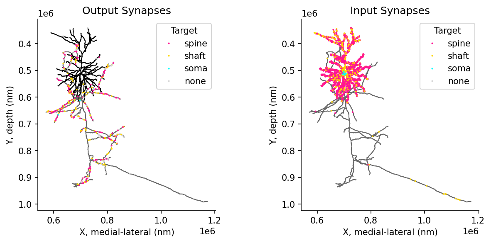
Filtering synapses by compartment and distance
### Calculate synapse distance to root
# Convert annotations to positional indices for algorithm
post_syn_indices = cell.annotations.post_syn.map_index_to_layer(
"skeleton", as_positional=True
)
# compute distance to root for every annotation
distances_to_root = cell.skeleton.distance_to_root(post_syn_indices)
post_syn_df['distance_to_root'] = distances_to_root# @title Figure 12: Skeleton filtering and distance calculation
fig, ax = plt.subplots(1, 2, figsize=(10, 4), dpi=150)
with cell.skeleton.mask_context(cell.skeleton.features['compartment'] != 2) as dendrite_cell:
for i in range(2):
ossify.plot.plot_morphology_2d(dendrite_cell,
projection="xy",
color="compartment",
palette={1: 'navy', 2: 'dimgrey', 3: 'black'},
ax=ax[i])
dendrite_syn_ids= dendrite_cell.annotations.post_syn.nodes.index.to_numpy()
# Input synapses
sns.scatterplot(data=post_syn_df.loc[post_syn_df.index.isin(dendrite_syn_ids)],
x="ctr_pt_position_x", y="ctr_pt_position_y",
s=3, hue='distance_to_root', palette= 'coolwarm',
ax=ax[1], edgecolor=None, zorder=100)
ax[0].set(title="Dendrite Only (masked)", xlabel='X, medial-lateral (nm)', ylabel='Y, depth (nm)')
ax[1].set(title="Distance to soma", xlabel='X, medial-lateral (nm)', ylabel='Y, depth (nm)')
sns.despine()
sns.move_legend(ax[1], "upper left", bbox_to_anchor=(1, 1))
plt.show()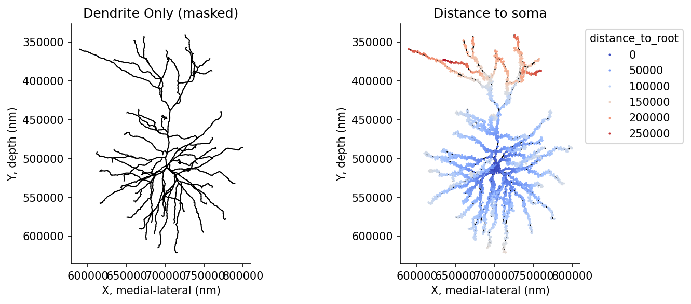
Further resources:
In the repository for this data access tutorial, there is also
- Preprocessing used to colate the cell types information :
preprocessing_celltypes_v1718.ipynb - Setting up a persistent CAVE token for continued use in google colab :
Tutorial_Colab_Persistent_Token.ipynb - Downloading the synaptic cleft and mesh around the synapse for further analysis :
Tutorial_Download_Synapse_Mesh.ipynb - Programmatic generation and parsing of neuroglancer states :
Tutorial_NGLUI.ipynb
Furter documentation
- MICrONS Tutorials : https://tutorial.microns-explorer.org/
- Connectome Annotation Versioning Engine CAVE : https://www.caveconnecto.me/CAVEclient/tutorials/
- Ossify : https://csdashm.com/ossify/